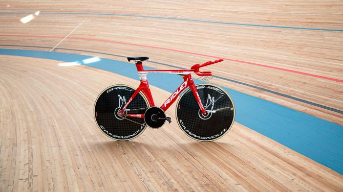

4月16日，比利时乐透-速的奥车队的维克多·坎佩纳尔特在墨西哥阿瓜斯卡连特斯双百自行车馆打破一小时纪录。坎佩纳尔特使用了一台特制Ridley Arena场地车，车架基于Ridley计时车型Dean Fast打造，并为坎佩纳尔特进行了专业定制。

坎佩纳尔特的Ridley Arena战车有着为他量身打造的车把。下把位仅宽330mm，以追求极致的气动性能。在挑战纪录的一小时中，坎佩纳尔特仅仅需要在最初15秒抓住下把位，速度达到50km/h+后便转换到休息把位。
整台车上最引人注目的就是这个休息把了，基于坎佩纳尔特前臂模具打造的休息把是他打破纪录的关键之一。这个休息把能够给坎佩纳尔特带来最舒适安全的把位，让其上身保持最佳气动姿势而不会有滑动的风险。在去年因斯布鲁克世锦赛的男子计时赛上，坎佩纳尔特正是使用这个车把取得了铜牌。